한국사능력검정시험-중급(폐지) (2011-08-13 기출문제)
1. 다음 유물이 제작된 시기의 사회 모습으로 옳은 것을 <보기>에서 고른 것은? [1점]
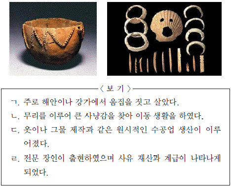
- ㄱ, ㄴ
- ㄱ, ㄷ
- ㄴ, ㄷ
- ㄴ, ㄹ
- ㄷ, ㄹ
(정답률: 76%)

2. 밑줄 그은‘이 나라’에 대한 설명으로 옳은 것은? [2점]
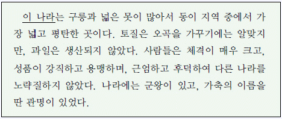
- 소도라고 불리는 별읍이 있었다.
- 특산물로 단궁, 과하마가 유명하였다.
- 별도의 행정 구획인 사출도가 있었다.
- 10월에 왕과 신하들이 국동대혈에 모여 함께 제사를 지냈다.
- 시체를 가매장하였다가 그 뼈를 추려서 목곽에 안치하는 풍습이 있었다.
(정답률: 62%)
3. 다음 설명에 해당하는 탑으로 옳은 것은? [1점]
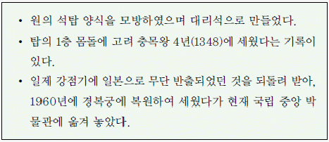
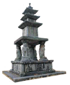
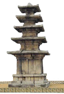
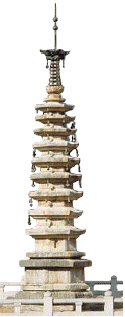
(정답률: 73%)
4. (가)~(마) 시기의 사실로 옳은 것은? [2점]
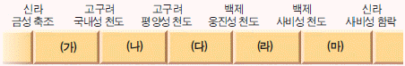
- (가) - 신라에서 화랑도를 국가 조직으로 개편하였다.
- (나) - 고구려에서 태학을 설치해 유교 경전을 교육하였다.
- (다) - 고구려에서 이문진이「신집」을 편찬하였다.
- (라) - 백제가 동진으로부터 불교를 수용하였다.
- (마) - 백제에서 고흥이「서기」를 편찬하였다.
(정답률: 59%)
5. (가)~(다)에 대한 설명으로 옳은 것을 <보기>에서 고른 것은? [2점]
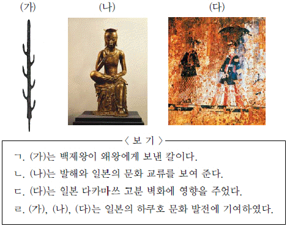
- ㄱ, ㄴ
- ㄱ, ㄷ
- ㄴ, ㄷ
- ㄴ, ㄹ
- ㄷ, ㄹ
(정답률: 78%)
6. 지도의 (가), (나) 국가의 경제활동으로 옳지 않은 것은? [1점]
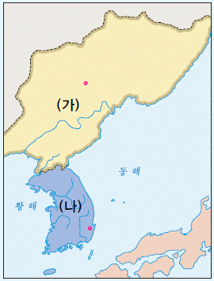
- (가) - 담비가죽 등의 모피류를 수출하였다.
- (가) - 귀족의 수요품인 비단, 책 등을 수입하였다.
- (나) - 동경에서 시작되는 무역로를 통해 일본과 교역하였다.
- (나) - 물품 거래가 활성화되면서 서시와 남시를 추가로 설치하였다.
- (가), (나) - 두 국가 사이의 교통로를 통해 사람과 물자가 왕래하였다.
(정답률: 36%)
7. 다음 유물을 통해 알 수 있는 사실로 옳은 것은? [2점]
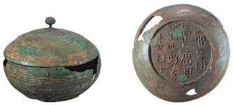
- 백제가 요서 지역에 진출하였다.
- 가야가 신라에 의해 통합되었다.
- 고구려가 천리장성을 축조하였다.
- 왜의 수군이 백제 부흥군을 지원하였다.
- 신라가 고구려의 정치적 영향을 받고 있었다.
(정답률: 85%)
8. 다음 노래와 관련된 민족 운동에 대한 설명으로 옳은 것은? [1점]
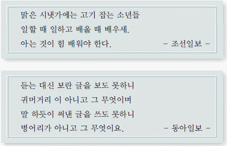
- 통감부의 탄압을 받았다.
- 학생들이 적극적으로 전개하였다.
- 조선어 학회 사건으로 침체되었다.
- 신간회가 결성되는 데 영향을 주었다.
- 일제가 치안 유지법을 제정하는 계기가 되었다.
(정답률: 43%)
9. 다음 금석문과 관련된 국가에 대한 설명으로 옳지 않은 것은? [2점]
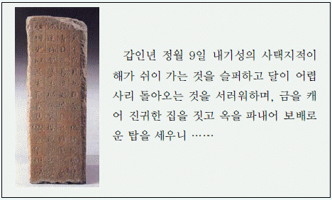
- 관료들의 위계를 17등급으로 정비하였다.
- 반역한 자나 전쟁터에서 퇴각한 군사는 목을 베었다.
- 왕족인 부여씨와 8성의 귀족이 지배층을 구성하였다.
- 도둑질한 자는 귀양 보냄과 동시에 2배를 물게 하였다.
- 관리가 국가 재물을 횡령하면 3배를 배상하게 하고, 종신토록 금고형에 처하였다.
(정답률: 41%)
10. 밑줄 그은‘왕’의 정책으로 옳은 것은? [3점]
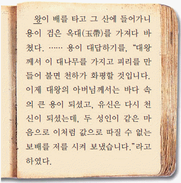
- 천문을 관측하기 위해 첨성대를 세웠다.
- 귀족들에게 지급하던 녹읍을 폐지하였다.
- 독서삼품과를 실시하여 관리를 채용하였다.
- 집사부를 처음 설치하여 중시를 장관으로 하였다.
- 성덕 대왕 신종을 주조하여 선왕의 업적을 기렸다.
(정답률: 62%)
11. (가), (나)와 관련된 사상에 대한 설명으로 옳지 않은 것은? [2점]
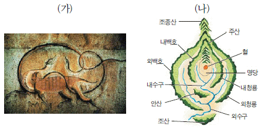
- (가) - 고려 시대 궁중에서 성행한 초제와 관련이 있다.
- (가) - 삼국 시대에 전래되어 귀족 사회를 중심으로 환영받았다.
- (나) - 신라 중대 진골 귀족의 사상적 기반으로 기능하였다.
- (나) - 조선 시대 향촌 사족 간의 산송(山訟)을 초래하였다.
- (가), (나) - 모두 중국으로부터 유입되었다.
(정답률: 35%)
12. 밑줄 그은‘이 지역’과 관련한 설명으로 옳은 것을 <보기>에서 고른 것은? [2점]
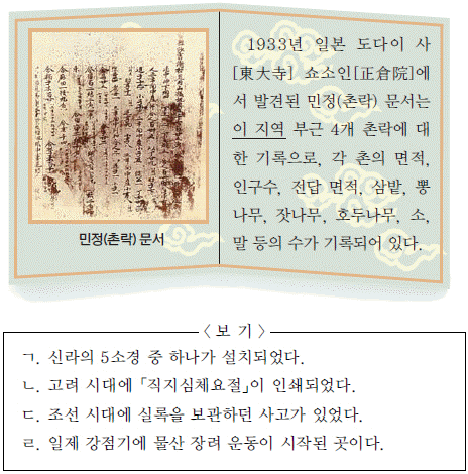
- ㄱ, ㄴ
- ㄱ, ㄷ
- ㄴ, ㄷ
- ㄴ, ㄹ
- ㄷ, ㄹ
(정답률: 41%)
13. 지도에 빗금 표시된 지역을 확보한 왕의 정책으로 옳은 것은? [2점]
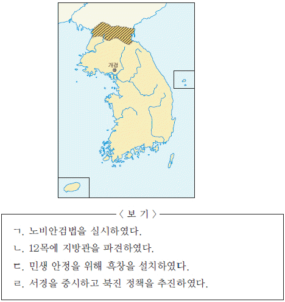
- ㄱ, ㄴ
- ㄱ, ㄷ
- ㄴ, ㄷ
- ㄴ, ㄹ
- ㄷ, ㄹ
(정답률: 50%)
14. (가)에 들어갈 사실로 가장 적절한 것은? [2점]
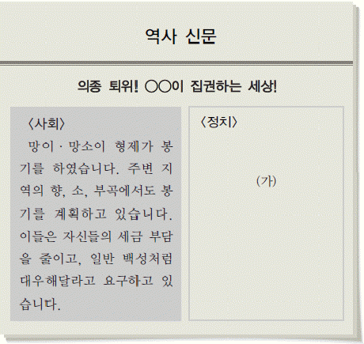
- 중방이 최고 권력 기관으로 부상하였다.
- 쌍기의 건의를 수용하여 과거 제도를 실시하였다.
- 이자겸 일파가 군사를 이끌고 궁궐에 불을 질렀다.
- 공민왕이 머리 모양과 옷을 고려식으로 바꾸었다.
- 최무선의 건의를 받아들여 화통도감을 설치하였다.
(정답률: 51%)
15. 밑줄 그은 놀이를 표현한 그림으로 옳은 것은? [2점]
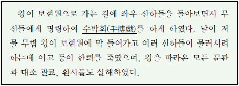
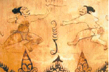
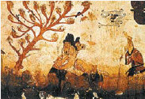
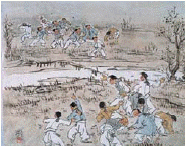
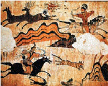
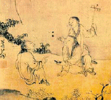
(정답률: 66%)
16. 다음 계획을 실시한 시기의 경제 상황에 대한 설명으로 옳은 것은? [3점]
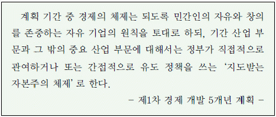
- 저유가, 저금리, 저달러의 3저 호황기였다.
- 경공업 중심의 수출 주도형 경제 정책이 시행되었다.
- 미곡 수집령을 반포하여 쌀값 폭등을 막고자 하였다.
- 미국의 경제 원조를 바탕으로 한 삼백 산업이 발달하였다.
- 소작료를 1/3로 낮추고 소작권을 함부로 회수하지 못하게 하였다.
(정답률: 60%)
17. 다음 글이 실려 있는 작품에 대한 설명으로 옳지 않은 것은? [2점]
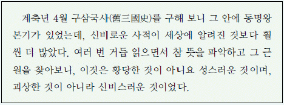
- 「동국이상국집」에 실려 있다.
- 장편 서사시의 형태로 서술되었다.
- 자주적 민족의식이 반영되어 있다.
- 고려가 고구려를 계승하였음을 강조하였다.
- 고조선에서 고려 말까지의 역사를 서술하였다.
(정답률: 33%)
18. 다음 자료에 나타난 시기의 사회 모습에 대한 설명으로 옳지 않은 것은? [2점]
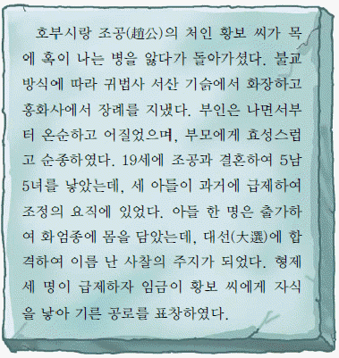
- 부모의 유산은 자녀들에게 골고루 분배되었다.
- 아들이 없을 경우 딸이 제사를 받들기도 하였다.
- 재가한 여성의 자식은 벼슬에 나아갈 수 없었다.
- 남녀에 관계없이 태어난 차례대로 호적에 기재하였다.
- 공을 세운 사람의 부모뿐만 아니라 장인과 장모도 함께 상을 받았다.
(정답률: 68%)
19. 다음 장면에 나타난 명절의 세시풍속으로 옳지 않은 것은? [3점]
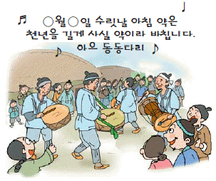
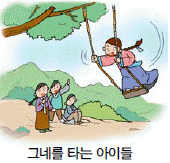
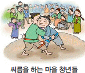
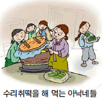
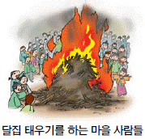
(정답률: 53%)
20. 다음 인물에 대한 설명으로 옳은 것은? [2점]
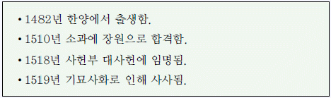
- 소격서의 폐지를 주장하였다.
- 불씨잡변을 써서 불교를 비판하였다.
- 중종반정으로 공신의 작위를 받았다.
- 세조의 왕위 찬탈을 풍자한 조의제문을 지었다.
- 관학파 학풍을 계승하여 부국강병을 추구하였다.
(정답률: 55%)
21. (가)에 대한 설명으로 옳은 것은? [2점]
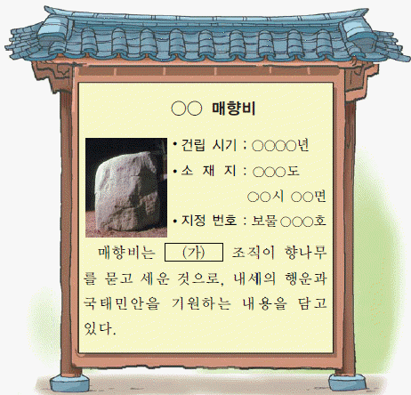
- 세속 5계를 지키려고 노력하였다.
- 수령을 보좌하고 향리를 감찰하였다.
- 불교적인 신앙 조직에서 기원하였다.
- 유교 윤리를 실천하기 위하여 만들었다.
- 두레라고도 불리는 농민 공동체 조직이었다.
(정답률: 41%)
22. (가)에 들어갈 내용으로 옳은 것은? [3점]
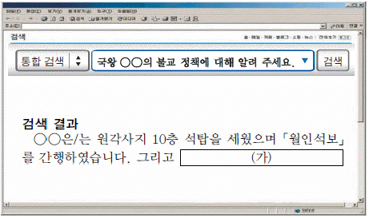
- 「초조대장경」을 간행하였습니다.
- 보우를 중용하고 승과를 부활시켰습니다.
- 연등회와 팔관회를 성대하게 개최하였습니다.
- 불교 교단을 정리해 선·교 양종으로 통합하였습니다.
- 간경도감을 설치하여 불교 경전을 한글로 번역하였습니다.
(정답률: 24%)
23. (가)∼(라)에 대한 설명으로 옳지 않은 것은? [2점]
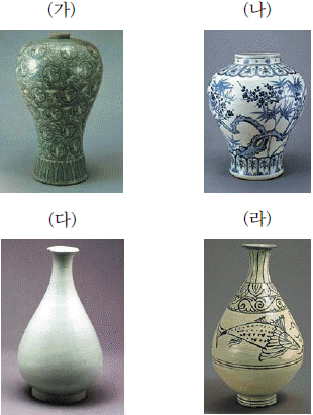
- (가) - 전라도 강진과 부안이 대표적인 생산지였다.
- (나) - 수공업 생산을 담당한 소(所)에서 생산되었다.
- (다) - 16세기 이후에 유행하였다.
- (라) - 청자에 백토의 분을 칠하여 만들었다.
- (가) - (라) - (다) - (나)의 순서로 유행하였다.
(정답률: 33%)
24. (가)에 대한 조선 정부의 정책으로 옳은 것을 <보기>에서 고른 것은? [2점]
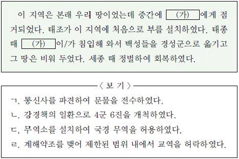
- ㄱ, ㄴ
- ㄱ, ㄷ
- ㄴ, ㄷ
- ㄴ, ㄹ
- ㄷ, ㄹ
(정답률: 47%)
25. 밑줄 그은‘왕’의 업적으로 옳은 것을 <보기>에서 고른 것은? [3점]
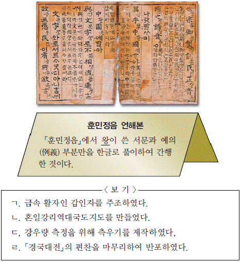
- ㄱ, ㄴ
- ㄱ, ㄷ
- ㄴ, ㄷ
- ㄴ, ㄹ
- ㄷ, ㄹ
(정답률: 62%)
26. 다음 자료에 나타난 시기의 사회 모습으로 적절한 것은? [1점]
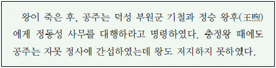
- 김순식에게 왕씨 성을 하사하였다.
- 전제 개혁을 단행하여 과전법을 실시하였다.
- 건원중보를 주조하여 화폐의 유통을 장려하였다.
- 공녀로 보내지 않기 위해 딸을 어린 나이에 혼인시켰다.
- 몽골군을 물리친 포상으로 처인 부곡이 현으로 승격되었다.
(정답률: 61%)
27. 밑줄 그은‘이들’에 대한 설명으로 옳은 것을 <보기>에서 고른 것은? [3점]
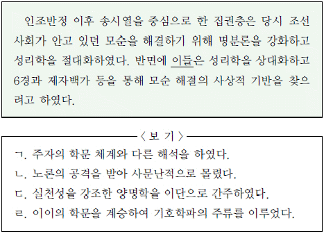
- ㄱ, ㄴ
- ㄱ, ㄷ
- ㄴ, ㄷ
- ㄴ, ㄹ
- ㄷ, ㄹ
(정답률: 28%)
28. (가)에 들어갈 내용으로 적절한 것은? [2점]
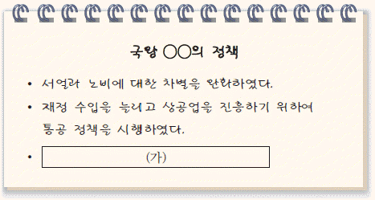
- 중앙군을 5위에서 5군영 체제로 전환하였다.
- 명과 후금 사이에서 중립 외교를 실시하였다.
- 전국의 서원을 47개만 남기고 대폭 정리하였다.
- 유능한 인사를 재교육하는 초계문신 제도를 실시하였다.
- 외침에 대비하여 임시 회의 기구인 비변사를 설치하였다
(정답률: 53%)
29. 다음 대화가 이루어진 배경으로 옳은 것을 <보기>에서 고른 것은? [3점]
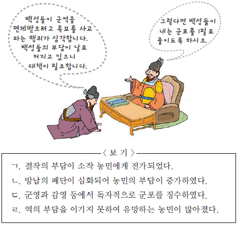
- ㄱ, ㄴ
- ㄱ, ㄷ
- ㄴ, ㄷ
- ㄴ, ㄹ
- ㄷ, ㄹ
(정답률: 28%)
30. 다음을 주장한 실학자에 대한 설명으로 옳은 것은? [2점]
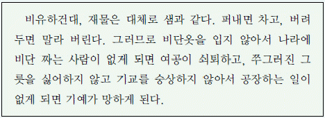
- 정통론에 입각하여「동사강목」을 저술하였다.
- 「우서」를 저술하여 상공업 진흥을 강조하였다.
- 북벌론을 비판하고 청 문물의 수용을 주장하였다.
- 육두론을 통해 나라를 좀 먹는 여섯 가지 폐단을 지적하였다.
- 토지의 공동 소유·공동 경작을 골자로 한 여전제를 주장하였다.
(정답률: 40%)
31. 다음 그림이 그려진 시기의 농촌 상황으로 옳지 않은 것은? [2점]
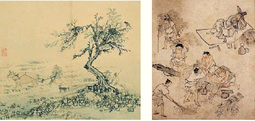
- 일정 액수를 소작료로 내는 도조법이 등장하였다.
- 장시에 팔기 위한 채소, 담배, 약초가 재배되었다.
- 모내기법의 확대로 농업 경영 방식이 변화되었다.
- 밭농사에서 조, 보리, 콩의 2년 3작이 시작되었다.
- 쌀 수요 증대로 밭을 논으로 바꾸는 현상이 활발하였다.
(정답률: 49%)
32. 다음 화폐에 그려진 인물의 작품으로 옳은 것은? [1점]
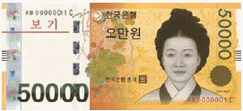
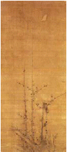
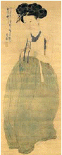
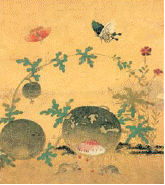
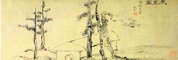
(정답률: 71%)
33. 밑줄 그은‘이 시기’의 사회 모습으로 옳지 않은 것은?[2점]
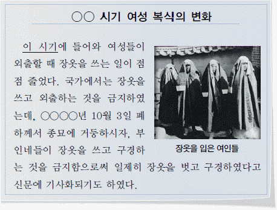
- 서울 시내에 전기가 들어왔다.
- 서양식의 2층 건물이 세워졌다.
- 안경을 쓴 사람이 나타나기 시작하였다.
- 전차가 서대문에서 청량리까지 운행되었다.
- 상류층을 중심으로 전화가 보급되기 시작하였다.
(정답률: 45%)
34. 선생님의 질문에 대한 학생의 답변으로 옳은 것을 <보기>에서 고른 것은? [2점]
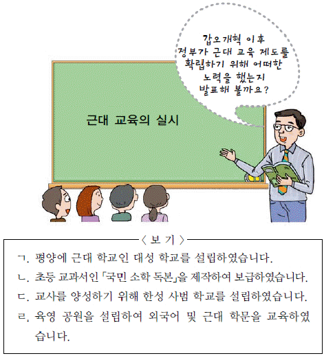
- ㄱ, ㄴ
- ㄱ, ㄷ
- ㄴ, ㄷ
- ㄴ, ㄹ
- ㄷ, ㄹ
(정답률: 20%)
35. (가), (나) 조약이 체결된 시기 사이의 경제 상황으로 옳은 것을 <보기>에서 고른 것은? [3점]
- ㄱ, ㄴ
- ㄱ, ㄷ
- ㄴ, ㄷ
- ㄴ, ㄹ
- ㄷ, ㄹ
(정답률: 40%)
36. 다음 법령이 제정된 시기의 식민 정책으로 옳은 것은? [2점]
- 남면북양 정책을 추진하였다.
- 산미 증식 정책을 다시 실시하였다.
- 헌병 경찰에게 즉결 처분권을 부여하였다.
- 국가 총동원령에 의해 수탈을 강화하였다.
- 한글 신문의 발행을 부분적으로 허가하였다.
(정답률: 80%)
37. 밑줄 그은‘두 섬’에 대한 탐구 활동으로 적절하지 않은 것은? [3점]
- 이사부의 정벌 기사를 찾아본다.
- 안용복의 활동 내용을 알아본다.
- 독도 의용 수비대의 활동 내용을 파악한다.
- 일본의 남만주 철도 부설권 획득 과정을 알아본다.
- 러·일 전쟁 중 일본의 영토 침탈 내용을 조사한다.
(정답률: 75%)
38. 자료에 나타난 민족 운동에 대한 설명으로 옳은 것은? [1점]
- 보안회가 주도하였다.
- 대한매일신보가 후원하였다.
- 평양에서 시작되어 전국으로 확산되었다.
- 독립 협회가 민중의 호응을 이끄는 데 앞장섰다.
- ‘한민족 1천만이 한 사람이 1원씩’이라는 구호를 내세웠다.
(정답률: 35%)
39. 밑줄 그은‘이 책’을 저술한 인물의 활동으로 옳은 것은? [2점]
- 유교구신론을 주장하였다.
- 조선불교유신론을 제창하였다.
- 역사 발전의 보편성을 강조하였다.
- ‘시일야방성대곡’을 써서 을사조약을 비판하였다.
- 역사를‘아(我)’와‘비아(非我)’의 투쟁으로 이해하였다.
(정답률: 25%)
40. 다음 화폐를 발행한 순서대로 나열한 것은? [1점]
- (가) - (나) - (다) - (라)
- (가) - (다) - (나) - (라)
- (나) - (가) - (다) - (라)
- (나) - (가) - (라) - (다)
- (나) - (라) - (가) - (다)
(정답률: 54%)
41. (가) 단체를 결성한 계층에 대한 설명으로 옳지 않은 것은? [2점]
- 고려 시대에 화척이라 불리었다.
- 조선 시대에 신량역천이라 하여 차별받았다.
- 갑오개혁 때 법적으로 신분이 해방되었다.
- 만민 공동회에서 관민의 단결을 호소하는 연설을 하였다.
- 일제 강점기에 호적의 직업란에 붉은 점을 찍어 차별하였다.
(정답률: 27%)
42. 다음 원칙을 발표한 기구에 소속된 인물을 <보기>에서 고른 것은? [1점]
- ㄱ, ㄴ
- ㄱ, ㄷ
- ㄴ, ㄷ
- ㄴ, ㄹ
- ㄷ, ㄹ
(정답률: 60%)
43. 다음 화폐 개혁에 대한 설명으로 옳은 것은? [2점]
- 제일은행권을 본위 화폐로 하였다.
- 경제 개발 자금을 마련하기 위하여 실시하였다.
- 기존 화폐를 갑, 을, 병종으로 구분하여 교환해 주었다.
- 정권 교체 후 은닉 자금을 끌어내기 위하여 실시하였다.
- 화폐 남발로 인한 혼란과 인플레이션을 수습하기 위해 실시하였다.
(정답률: 42%)
44. (가) 토지 제도에 대한 설명으로 옳은 것은? [2점]
- 경기도에 한하여 관리에게 수조권을 지급하였다.
- 현직 관리에게만 토지를 지급하도록 조정하였다.
- 인품과 관품을 반영하여 전지와 시지를 지급하였다.
- 관품을 고려하여 전·현직 관리에게 전지와 시지를 지급하였다.
- 개국 공신과 왕실의 세습적인 경제 기반 마련을 위해 실시하였다.
(정답률: 40%)
45. (가) 위원회에 대한 설명으로 옳은 것은? [3점]
- 기한을 연장하여 활동하였다.
- 정부의 적극적인 지원을 받았다.
- 미 군정청의 인준을 받아 활동하였다.
- 제헌 국회에서 제정된 법에 근거하였다.
- 신탁 통치 문제를 해결하기 위하여 조직되었다.
(정답률: 40%)
46. 다음 자료에 나타난 민주화 운동에 대한 설명으로 옳은 것은? [2점]
- 자유당 정권을 무너뜨렸다.
- 대통령 직선제 개헌을 이루어냈다.
- 긴급 조치권이 발동되어 탄압받았다.
- 유신 체제를 종식시키는 계기가 되었다.
- 야당 당수의 국회의원직 제명이 원인이 되어 일어났다.
(정답률: 61%)
47. 다음 정치 상황이 나타나게 된 배경으로 가장 적절한 것은? [2점]
- 내각 책임제와 양원제를 추진하였다.
- 대통령을 3번까지 할 수 있도록 헌법을 바꾸려고 하였다.
- 초대 대통령에 한하여 연임 제한 규정을 철폐하려 하였다.
- 재집권이 어려워진 여당이 대통령 직선제로 개헌을 추진하였다.
- 대통령 선거인단에 의한 간접 선거를 통해 대통령을 선출하려 하였다.
(정답률: 26%)
48. 다음 교육 시책이 실시된 시기의 정치 상황으로 옳은 것은? [2점]
- 진보당이 해체되었다.
- 소련·중국과 수교가 이루어졌다.
- 대통령이 국회의원의 3분의 1을 추천하였다.
- 공직자 재산 등록, 지방 자치제 등이 시행되었다.
- 총선 결과 야당이 절반 이상의 의석을 차지하였다.
(정답률: 51%)
49. (가), (나) 기사와 관련된 각 정부의 정책으로 옳은 것은? [2점]
- (가) - 개성 공업 단지를 조성하였다.
- (가) - 끊어진 경의선과 동해선의 연결을 추진하였다.
- (나) - 금융, 재벌, 공공, 노동 부분에 대한 구조 조정을 단행하였다.
- (나) - 경제 협력 개발 기구 (OECD)에 가입하는 등 시장 개방 정책을 실시하였다.
- (가), (나) - 남북 간의 긴장 완화를 위해 이산가족 상봉을 실현하였다.
(정답률: 37%)
50. 자료에 나타난 시기에 정부가 제시한 통일 정책으로 옳은 것은? [1점]
- 북진 통일론을 주장하였다.
- 한민족 공동체 통일 방안을 제시하였다.
- 평화 통일 3대 기본 원칙을 발표하였다.
- 민족 화합 민주 통일 방안을 제안하였다.
- 유엔 감시 아래 남북한 총선거를 주장하였다.
(정답률: 25%)
이 유물은 청동기 시대의 유물로, 제작된 시기는 약 1000년 전후인 기원전 1천년경입니다. 이 시기에는 농경사회가 발달하였으며, 청동기 도구와 농기구 등이 사용되었습니다. 또한, 이 시기에는 동북아시아 지역에서는 청동기 문화가 형성되었습니다.